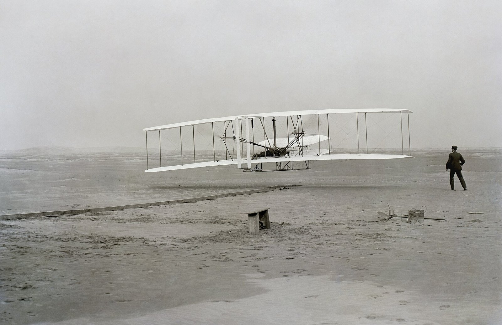
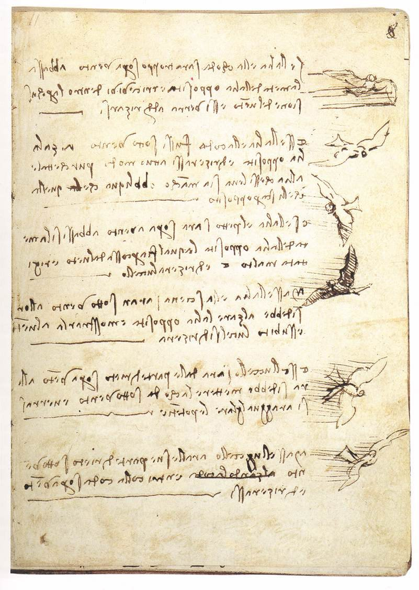
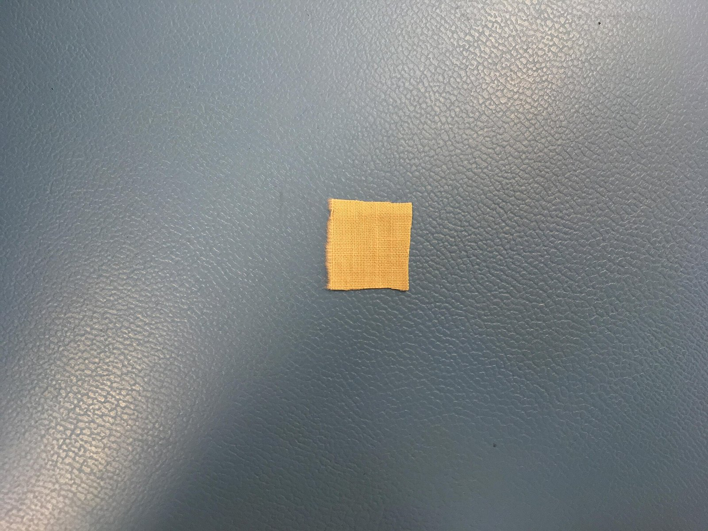
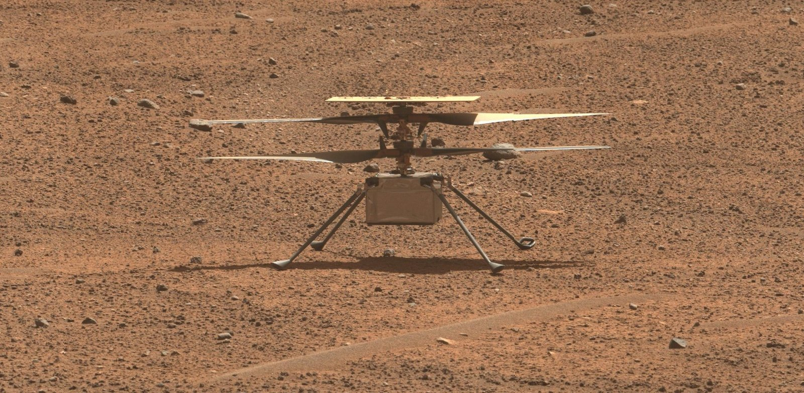

[하늘길, 항공①] 이카로스의 밀랍 날개에서 키티호크의 12초까지, 하늘을 꿈꾼 인류의 도전
꼬리를 몰라 떨어진 중세의 두 비행자, 근거 찾기 어려운 조선 비거
1903년 12월 17일 첫 동력비행, 그 날개 천은 화성과 달까지
AI경제저널=김갑봉 기자 | 1903년 12월 17일 오전 10시 35분 미국 키티호크 인근에서 오빌 라이트가 탄 플라이어호가 떠올랐다. 12초 동안 36m를 날았다. 사람을 태운 동력 비행기가 처음 하늘을 난 순간이었다(스미스소니언 국립항공우주박물관).

그 12초에 이르기까지 사람은 오랫동안 하늘을 꿈꿨다. 신화는 날개를 주었고 기록은 실패를 남겼으며, 꿈이 설계가 되기까지는 수천 년이 걸렸다. 그 길을 따라가 본다.
밀랍 날개의 역설, 이카로스
서양에서 가장 널리 알려진 비행 신화는 그리스의 이카로스 이야기다. 로마 시인 오비디우스의 『변신 이야기』에서 장인 다이달로스는 바다에 막혀 크레타를 떠나지 못하자 하늘길로 달아나기로 했다(오비디우스).
다이달로스는 깃털을 짧은 것부터 긴 것까지 늘어놓고 가운데를 실로 묶고 밑동을 밀랍으로 붙였다. 그는 아들 이카로스에게 너무 낮게도, 너무 높게도 날지 말고 가운데로 날라고 일렀다(오비디우스).
이카로스는 하늘을 나는 기쁨에 취해 태양 가까이 올라갔다. 밀랍이 녹아 깃털이 떨어지자 그는 바다에 빠졌다. 그 바다는 그의 이름을 따 이카리아해로 불린다(오비디우스).
이카로스는 아버지가 일러 준 가운데 길을 벗어났다. 날개를 다는 일과 날개를 다루는 일은 달랐던 셈이다. 그 뒤 하늘에 도전한 이들도 이 두 일 사이에서 번번이 떨어졌다.
꼬리를 몰랐던 중세의 두 비행자
9세기 이베리아반도 코르도바의 학자 압바스 이븐 피르나스는 깃털을 단 날개를 펴고 날아올랐지만 내려앉다 꼬리뼈를 다쳤다고 전한다. 새가 꼬리로 내려앉는다는 점을 몰랐다는 이 전언은 10세기에 쓰인 것으로 보이며 이븐 하이얀의 연대기에 남았다(글레어 앤더슨).
11세기 잉글랜드 맘스베리 수도원의 수도사 에일머도 손발에 날개를 달고 탑에서 뛰어내렸다. 180m 남짓을 날다 떨어져 두 다리를 못 쓰게 됐다. 그는 꼬리를 달지 않은 것을 실패의 까닭으로 들었다(맘스베리의 윌리엄).
1125년 무렵 같은 수도원의 윌리엄이 남긴 이 기록은 지금도 연구 대상이다. 2026년 5월 영국 레스터대의 제임스 에이치슨은 비행 연도를 흔히 말하는 1000~1010년보다 수십 년 늦춰 볼 수 있다는 논문을 냈다(노츠 앤드 쿼리스).
조선 비거, 기록과 전설 사이
조선에도 하늘을 나는 수레 이야기가 있다. 19세기 학자 이규경은 『오주연문장전산고』 「비거변증설」에 신경준의 대책문을 끌어왔다. 임진왜란 때 영남의 외딴 성이 포위되자 성주와 가까운 이가 비거를 만들어 성에 날아들었고, 성주를 태워 30리를 날아 나갔다는 내용이다(한국고전종합DB).
이 글에는 만든 이의 이름이 없고, 이 비거를 진주성의 정평구가 만들었다는 이야기도 임진왜란 당시 기록으로는 확인되지 않는다. 김태호 전북대 한국과학문명학연구소 교수는 비거 기록이 전쟁 뒤 150~200년이 지나 나왔다고 짚었다(주간경향).
김태호 교수는 지금까지 만든 비거 모형을 옛 기록을 되살린 복원이 아니라 오늘의 항공 지식으로 빚은 상상으로 봤다. 이 이야기가 일제강점기에 민족의 자존심을 북돋우는 데 쓰였다는 점도 짚었다(주간경향).
이규경은 같은 글에서 조선 사람이 연경에서 러시아 사람을 만나도 비거 만드는 법은 묻지 않고 유리 거울 굽는 가마만 구한다고 꼬집었다. 그는 그 까닭을 경제(經濟), 곧 경세제민에 짧기 때문이라고 했다(한국고전종합DB).
다빈치, 꿈을 관찰로 바꾸다
레오나르도 다빈치는 비행에 관해 3만5000단어가 넘는 글과 스케치 500점을 남겼다. 그가 그린 비행기계는 대부분 날개를 퍼덕이는 오르니톱터였지만 사람의 근력으로는 그렇게 날개를 쳐 날 수 없었다(스미스소니언 국립항공우주박물관).

다빈치는 1505~1506년 쓴 『새의 비행에 관한 코덱스』에서 새 날개의 무게중심과 양력 중심의 관계를 다뤘다. 굽은 날개와 양력의 관계를 어렴풋이 짚었고 몸무게를 옮겨 균형을 잡는 방법도 적었다(스미스소니언 국립항공우주박물관).
키티호크의 12초, 날개를 다루는 법
라이트 형제는 1899년부터 4년 동안 연을 띄우고 글라이더를 만들며 비행을 연구했다. 1901년에는 풍동을 만들어 날개 모양을 시험했고 1902년 한 해에만 700~1000번을 활공했다(스미스소니언 국립항공우주박물관).
형제는 몸무게를 옮기는 대신 날개 끝을 비틀어 좌우 균형을 잡았다. 1900년과 1901년 글라이더에는 꼬리가 없었고, 1902년에는 움직이는 수직 꼬리를 달았다. 에일머가 실패의 까닭으로 꼽은 것도 꼬리였다(스미스소니언 국립항공우주박물관).
플라이어호 천 조각, 화성과 달로
2021년 4월 19일 미국 항공우주국(NASA)의 무인 헬리콥터 인저뉴어티가 화성에서 떠올랐다. 다른 행성에서 처음 이뤄진 조종 동력비행이었고, 기체에는 플라이어호 날개의 천 조각이 붙어 있었다(미국 항공우주국).

인저뉴어티는 최대 다섯 번 비행할 계획이었지만 2024년 1월까지 72번을 날았다. 2026년 4월에는 플라이어호의 다른 천 조각이 아르테미스 2호 유인 비행에 실려 달을 돌고 돌아왔다(미국 항공우주국·스미스소니언 국립항공우주박물관).

이븐 피르나스와 에일머는 날개를 달았지만 꼬리를 몰랐고, 라이트 형제는 날개를 다루는 법을 찾았다. 하늘길은 날개를 믿는 데서가 아니라 날개를 이해하는 데서 열린 셈이다. 1903년 키티호크의 무명천은 2026년 달을 돌았다.
참고문헌
- James Aitcheson, "The Date of Eilmer of Malmesbury's Flight", 『Notes and Queries』 73권 2호, 2026년, 181~183쪽(온라인 2026년 5월 7일). https://doi.org/10.1093/notesj/gjag066
- Lynn White Jr., "Eilmer of Malmesbury, an Eleventh Century Aviator: A Case Study of Technological Innovation, Its Context and Tradition", 『Technology and Culture』 2권 2호, 1961년, 97~111쪽. https://doi.org/10.2307/3101411
- Glaire Anderson, "The Earliest Source?", A Medieval 'First in Flight'(노스캐롤라이나대 채플힐 연구 사업). https://glairedanderson.com/medievalflight/the-sources/
- 오비디우스, 『변신 이야기』 8권 183~235행(A. S. Kline 영역), 버지니아대 오비디우스 컬렉션. https://ovid.lib.virginia.edu/trans/Metamorph8.htm
- William of Malmesbury, 『Gesta Regum Anglorum』, 1125년 무렵(R. A. B. Mynors·R. M. Thomson·M. Winterbottom 편역, Oxford Medieval Texts, 1998~1999).
- 이규경, 『오주연문장전산고』 인사편 기용류 주거 「비거변증설」, 한국고전종합DB. https://db.itkc.or.kr/dir/item?itemId=GO#/dir/node?dataId=ITKC_GO_1301A_0120_010_0110
- National Air and Space Museum, "1903 Wright Flyer"(소장품 A19610048000). https://airandspace.si.edu/collection-objects/1903-wright-flyer/nasm_A19610048000
- Peter Jakab, "Leonardo da Vinci and Flight", National Air and Space Museum, 2013년 8월 22일. https://airandspace.si.edu/stories/editorial/leonardo-da-vinci-and-flight
- NASA, "After Three Years on Mars, NASA's Ingenuity Helicopter Mission Ends", 2024년 1월 25일. https://www.nasa.gov/news-release/after-three-years-on-mars-nasas-ingenuity-helicopter-mission-ends/
- National Air and Space Museum, "A Piece of Aviation History (and the Museum) Flew Around the Moon on Artemis II"(영상), 2026년 4월 9일. https://airandspace.si.edu/multimedia-gallery/video/piece-aviation-history-just-flew-around-moon-artemis-ii
- NASA, "NASA's Artemis II Mission to Fly Legacy Keepsakes with Astronaut Crew", 2026년 1월 21일. https://www.nasa.gov/missions/artemis/artemis-2/nasas-artemis-ii-mission-to-fly-legacy-keepsakes-with-astronaut-crew/
- 김태호, "[구석구석 과학사](53) 조선시대 '하늘을 나는 수레'는 정말 있었나", 주간경향, 2019년 4월 8일. https://weekly.khan.co.kr/article/201904081522011
[사진 출처]
- [사진1] John T. Daniels, "First flight2.jpg", 미국 의회도서관(ppprs.00626), 위키미디어 공용, 퍼블릭 도메인. https://commons.wikimedia.org/wiki/File:First_flight2.jpg
- [사진2] Leonardo da Vinci, "Leonardo da vinci, Codex on the flight of birds.jpg", 위키미디어 공용, 퍼블릭 도메인. https://commons.wikimedia.org/wiki/File:Leonardo_da_vinci,_Codex_on_the_flight_of_birds.jpg
- [사진3] NASA/JPL-Caltech, PIA24438 "Pride of the West — and Mars", 2020년 1월 15일 촬영·2021년 4월 6일 공개, 미국 항공우주국 공개 자료. https://science.nasa.gov/photojournal/pride-of-the-west-and-mars/
- [사진4] NASA/JPL-Caltech/ASU/MSSS, PIA25968 "Perseverance Checks Out Ingenuity"(가운데 부분을 잘라 씀), 2023년 8월 2일, 미국 항공우주국 공개 자료. https://commons.wikimedia.org/wiki/File:Perseverance_Checks_Out_Ingenuity_(PIA25968).jpg